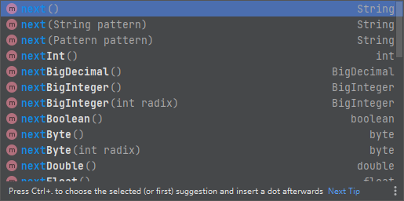

Java-Scanner类处理输入
Scanner类常用方法
使用Scanner类：通过new一个Scanner对象，从控制台输入语句：Scanner s = new Scanner(System.in)；
- hasNext() 是检测还有没有下一个输入；
- next() 是指针移动到当前下标，并取出下一个输入；
- nextLine() 把指针移动到下一行 让然后取出当前这一行的输入；
- hasNextLine() 是检测下一行有没有输入。
hasNext 和 hasNextLine
当执行到 hasNext() 时，它会先扫描缓冲区中是否有字符，有则返回 true，继续扫描。直到扫描为空，这时并不返回 false，而是将方法阻塞，等待你输入内容然后继续扫描。
换而言之，使用了 hasNext() 方法程序永远不会结束，我们如果想达到没有输入程序停止的效果，需要使用带正则表达式参数的 hasNext(Pattern pattern) or hasNext(String pattern)；hasNextLine() 与 hasNext() 用法类似，也是阻塞式的判断，而且 hasNextLine 并没有正则表达式参数的形式，所以一般只能用于文件的读取。
1 | Scanner sc = new Scanner(System.in); |
next 方法
next 方法在缓存区读取内容时，会过滤掉有效字符前面的无效字符，对输入有效字符之前遇到的空格键、Tab键或Enter键等结束符，next 方法会自动将其过滤掉；只有在读取到有效字符之后，next 方法才将其后的空格键、Tab键或Enter键等视为结束符；所以next 方法不能得到带空格的字符串。主要方法如下：

nextLine 方法
nextLine 方法字面上有扫描一整行的意思，它不会过滤掉无效字符，它的结束符只能是Enter键即换行键，即nextLine 方法返回的是换行之前没有被读取的所有字符，它是可以得到带空格的字符串的。
本博客所有文章除特别声明外，均采用 CC BY-NC-SA 4.0 许可协议。转载请注明来自 WangHao&博客！